Mittag am Meer: Ein langsamer Tag: Mittagessen mit Blick auf den Golf, danach durch das Viertel San Román. An jeder Ecke steht ein Oldtimer – darunter ein Vocho, der klassische VW Käfer, der in Puebla noch bis 2003 vom Band lief.
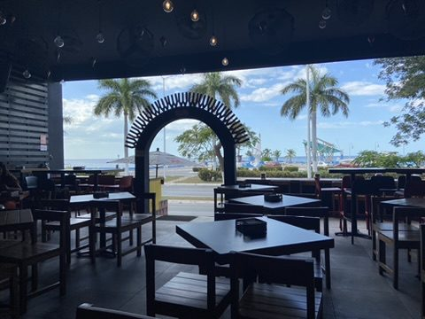
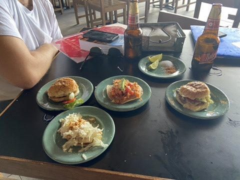
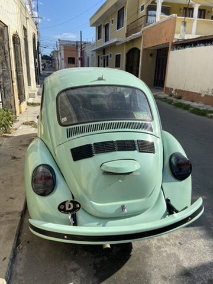
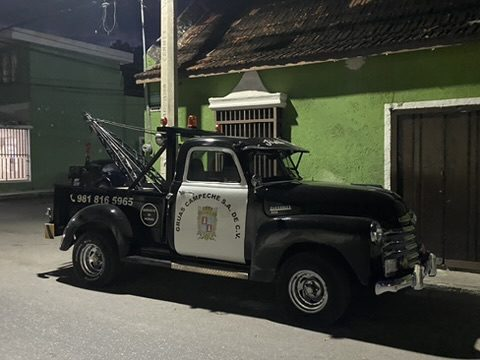
Calle 59: Abends wird die Calle 59 zur Fußgängerzone mit Tischen auf der Straße und Lichterketten über den Köpfen. Papel picado, das gestanzte Seidenpapier, hängt hier sogar im Fenster.
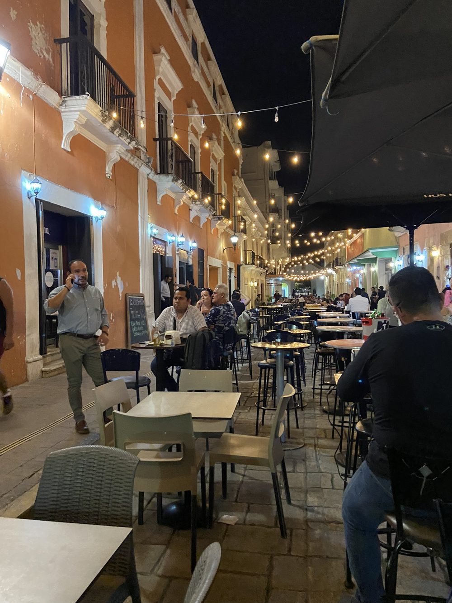
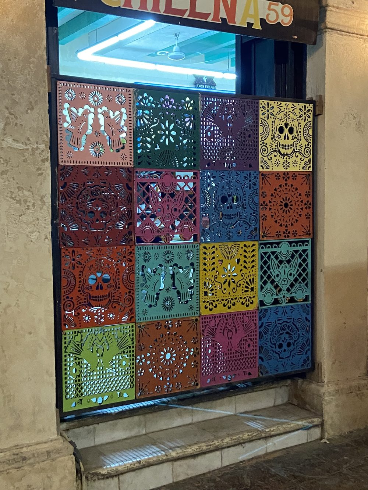
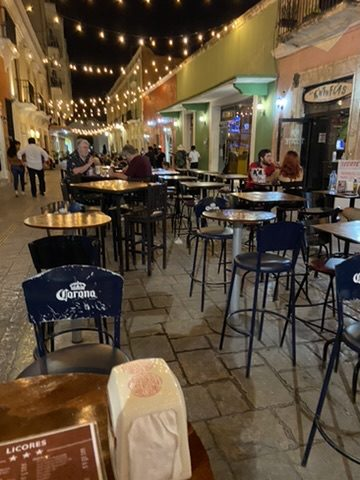
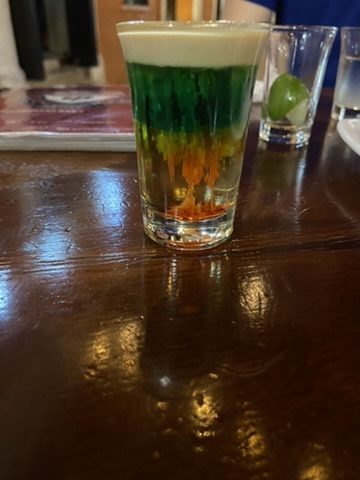
Farben wie die Flagge.
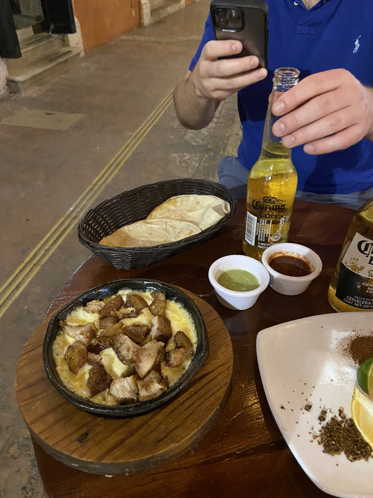
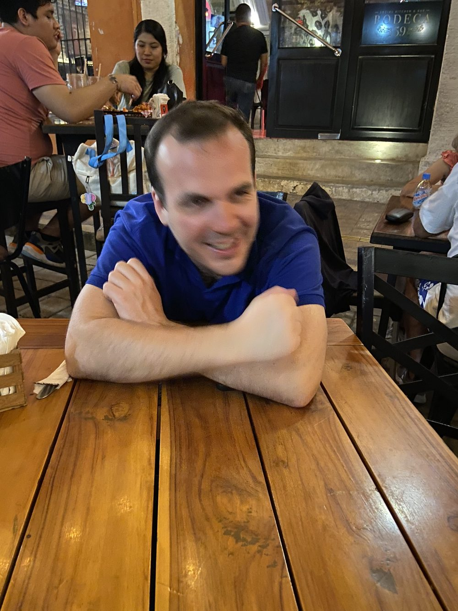
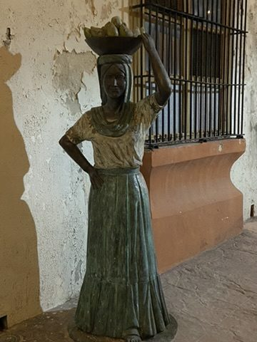
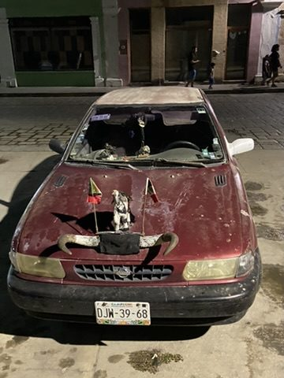
Und zum Abschluss: Campeches wohl eigenwilligstes Auto.